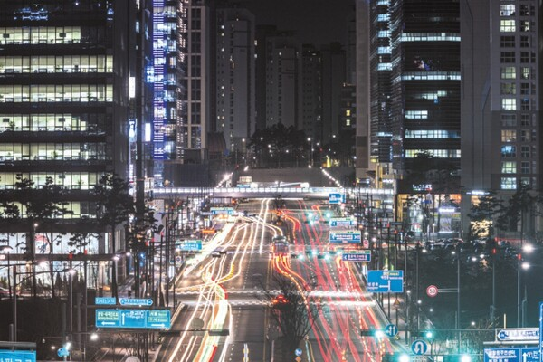
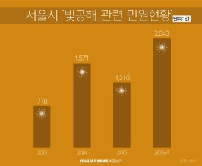
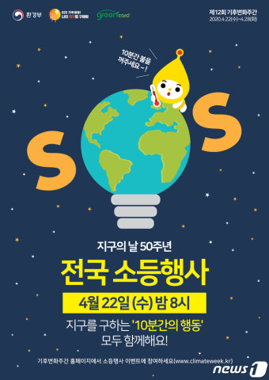
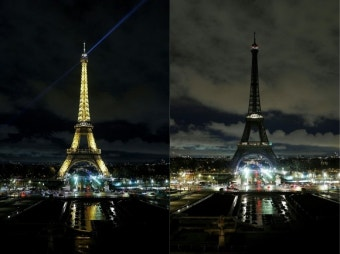
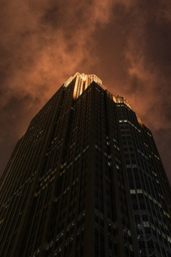

2026. 9. 6
💡우리가 찾은 문제는 바로 빛 공해입니다.
🌃밤인데 너무 밝아서 별이 잘 보이지 않습니다.
😴사람은 잠을 제대로 자지 못하고, 동물은 새끼를 낳거나 먹이를 찾기 어렵습니다.

늦은 밤에도 대낮처럼 환한 가로등과 조명이 비칩니다. 피로와 불편을 호소하는 사람이 늘고 있습니다.
별 보기 힘든 한국, 우리나라 빛 공해 이야기입니다.
▶ 영상 보러 가기 (유튜브)"별 보기 힘든 한국… 빛 공해 세계 2위" (YTN 사이언스, 유튜브) — 인터넷이 연결되어야 재생됩니다.

▲ 빛 공해 관련 민원 증가
🧠밤에 밝은 불빛을 보면 우리 몸이 낮이라고 착각합니다.
🌙어두워야 나오는 잠 호르몬(멜라토닌)이 불빛 때문에 나오지 않습니다.
😴그래서 잠이 잘 오지 않고, 자도 깊이 자지 못합니다.
😵이것이 오래되면 불면증과 만성 피로가 생깁니다.
- 동물은 어둠에 맞춰 생활하는데, 불빛이 방해가 됩니다.
- 철새는 도시의 밝은 불빛에 이끌려 건물에 부딪힙니다.
- 바다거북 새끼는 달빛 대신 인공 불빛을 따라가 길을 잃습니다.
- 야행성 동물도 불빛 때문에 방향을 찾지 못합니다.
우리가 어떻게 하면 쓸데없이 켜 둔 불빛을 줄이게 할 수 있을까?
📢빛 공해의 심각성을 알립니다.
💡밤 11시에는 모두 불을 끕니다.
❓퀴즈로 빛 공해를 재미있게 배웁니다.
🌍환경: 전력을 절약해 이산화탄소를 줄입니다 (수천 그루 소나무 효과).
🐢동물: 어둠을 되찾아 철새와 바다거북을 구합니다.
🌱곤충·양서류의 번식 주기가 되살아나 생태계가 회복됩니다.



🌏매년 한 번, 세계 여러 나라가 함께 1시간 동안 불을 끕니다.
🗼프랑스는 밤늦게 간판 불을 끕니다.
🏙️우리나라 도시들도 밤 11시 이후 장식 불을 끕니다.
배운 내용을 퀴즈로 풀어 봅시다!
보기를 누르면 정답이 바로 나옵니다. 모두 3문제입니다!
밤에 방이 너무 밝으면 잘 나오지 않는, 잠을 푹 자게 도와주는 호르몬은?
정답! 멜라토닌은 어두워야 잘 나오는 수면 호르몬입니다. 밤에 불을 끄고 자야 몸이 건강해집니다!
아기 바다거북은 달빛을 보고 바다를 찾아가요. 그런데 해변이 인공 조명으로 너무 밝으면 거북이에게 어떤 일이 생길까요?
정답! 거북이는 밝은 빛을 따라가는 습성이 있습니다. 가짜 불빛에 속아 바다가 아닌 내륙으로 가다 위험해집니다!
밤의 인공 조명(빛 공해)의 영향 중 틀린 설명은?
정답! 식물도 밤에는 어두워야 쉴 수 있습니다. 밤새 조명을 받으면 생체 리듬이 깨져 농작물 수확량이 줄어듭니다!
3문제 중 0문제를 맞혔습니다!
💡밤 11시에는 안 쓰는 불을 끕니다.
🛏️잘 때는 불을 끄고 잡니다.
🏠집 밖의 불빛도 아껴 씁니다.
🌙오늘 밤부터 모두 함께 실천합니다!
끝까지 들어주셔서
감사합니다!
출처: 빛 공해 민원 현황 – 연합뉴스 / 표지 이미지 · 5페이지 지구·뉴스 이미지 – 동아사이언스